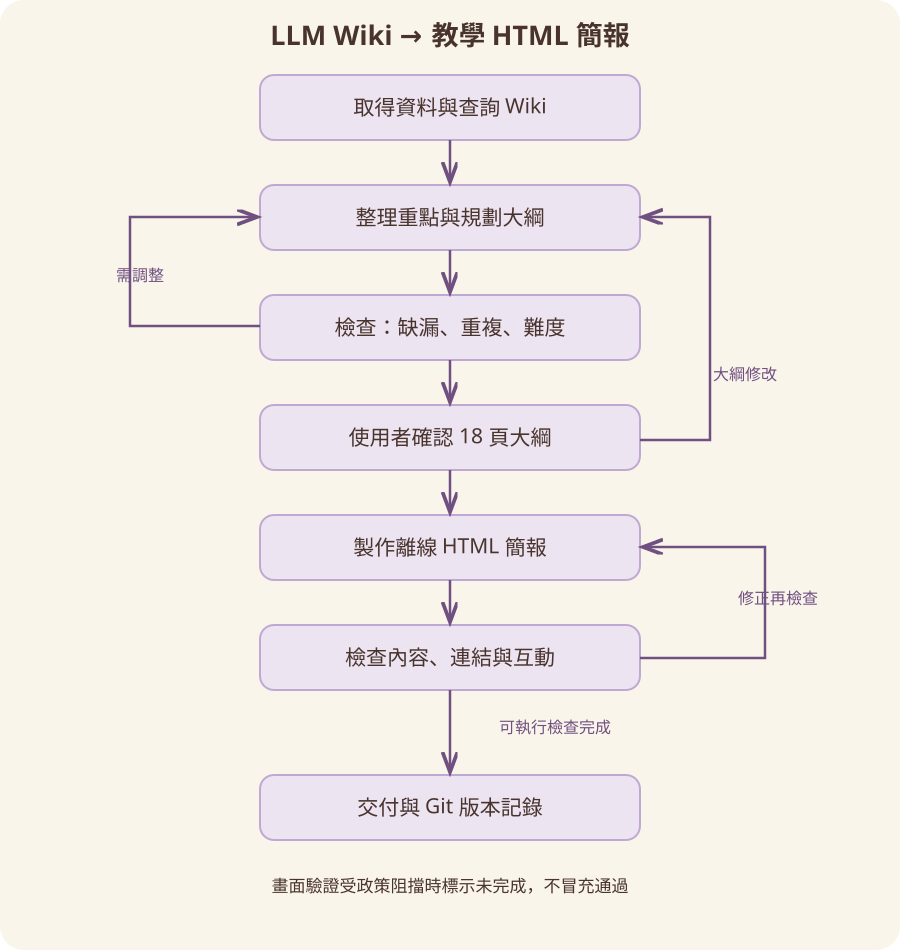

flowchart TD
A[取得資料與查詢 Wiki] --> B[整理重點與規劃大綱]
B --> C{檢查大綱}
C -->|需調整| B
C -->|通過| D{使用者確認}
D -->|修改| B
D -->|確認| E[製作 HTML]
E --> F{檢查內容與功能}
F -->|內容或互動問題| E
F -->|結構問題| B
F -->|已完成可執行檢查| G[交付與 Git 記錄]
- Ingest：逐篇讀取、整理摘要、更新主題頁、檢查、使用者審閱。
- 大綱 loop：缺漏、重複、難度不適合時回到整理重點；大綱變更重新確認。
- 成品 loop：來源、參數、連結與互動有問題時回製作，重查受影響項目。
- 瀏覽器政策阻擋的檢查列為未完成，不以其他測試冒充通過。
先固定教學範圍與來源，減少投影片做好才發現重複；檢查節點記錄問題、修正及重查結果，使流程可回溯。
沿用已確認 A 順序與 18 頁大綱，重新建置與測試。詳見 實際執行報告。